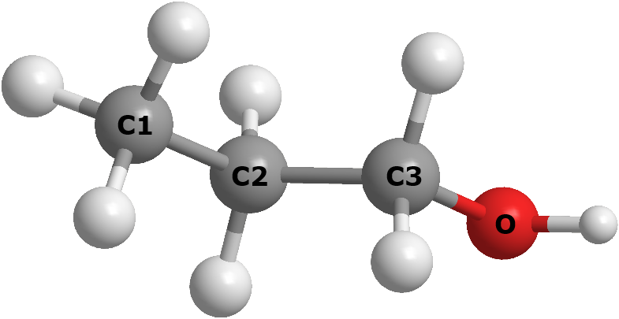

Atom typing¶
Atom typing is a set of procedures to determine the chemical type of an atom. By doing this, appropriate FF parameters for the atom can be determined to ensure the FF model is correctly set up for a given set of interactions.

Atom types
Consider a propanol molecule such as the one shown below. It consists of three different types of elements: carbon, hydrogen and oxygen. However, in molecular simulations, atom typing would identify more than three atom types. This is because the same elemental atoms can behave differently depending on their chemical environment.
{kind=link}
For instance, there are five different atom types: the primary (C1) and secondary (C2 and C3) alkyl carbons, the alkyl hydrogen and hydroxyl hydrogen, and a hydroxyl oxygen (O).
Obviously, some sort of atomic identification would be needed to determine the atom types. Some of the common atom typing implementations would be either based on, or involve combinations of, some file scripts, logic and symbolic syntax. For instance, consider the following two examples of typing procedures:
Example 1: [CX4](CO)(F)(F)(F)
Example 2: type = C & count(bonded_atoms(type = F)) = 3 & count(bonded_atoms(type = C)) = 1
The above examples show two different typing procedures that were used by different software packages to determine (specifically) a trifluoro alkyl carbon atom.
Atom keys
Atom keys are the labels for atom types. By referring to the two examples above, one software assigns the atom key for the trifluoro alkyl carbon as CT and the other as C791. They use different labels but in fact refer to the same atom type.
It should be noted that these labels are arbitrary and do not follow any standard protocol when they are named, simply because such a protocol does not exist. Furthermore, some FF schemes use different atom keys for different types of interactions. The most common approach is to use one atom key for all bonded interactions and another one for non-bonded vdW interactions.
Note
Most FF schemes refer to atom keys and atom types as the same thing. Usually, only the atom labels are shown in library files, with the typing procedures hidden within the program.
However, DL_FIELD can distinguish both atom keys and atom types; these are explicitly listed in its library files. Each of these are referred to as ATOM_KEY and ATOM_TYPE respectively within the DL_FIELD framework. An ATOM_TYPE is a human-readable label that uniquely refers to an ATOM_KEY. Different ATOM_TYPEs can refer to the same ATOM_KEY but not the other way around.
Atom typing challenges
Different FF schemes (or different software) use different atom typing procedures and assign atoms with different atom keys. Situations also become more complicated because different FF schemes can also classify atoms differently.
For example, referring to the propanol structure shown above: some FF schemes will assign an additional atom type for the secondary carbon atom (C3) that is connected to the oxygen atom. However, some FF schemes may even reduce the number of atom types, for instance, by collectively treating all alkyl carbons (C1, C2 and C3) as a single atom type.
Atom typing is one of the main reasons why it is difficult to interconvert FF models between different FF schemes for a given molecular system, since atom typing does not conform to any standard.
To reduce these non-standard barriers, DL_FIELD expresses ATOM_TYPEs in DL_F Notation syntax, which is universal across different FF schemes. The Notation ensures smooth data transformation within DL_FIELD when setting up a molecular system with different FF schemes.
For more information about how DL_F Notation works, please refer to the DL_FIELD.